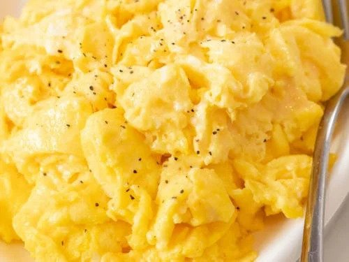

Scrambled Eggs Recipe

Scrambled Eggs Done Right
The right way to scramble eggs. There is more to just mixing eggs and cooking! This will make a believer out of you.
Preparation is 2 minutes. Cooking time 4 minutes. A total of 6 minutes.
Ingredients
- 2 eggs
- 1 teaspoon of mayonnaise or salad dressing
- 1 teaspoon of water (Optional)
- 1 teaspoon of margarine or butter
- 1 pinch of salt and pepper to taste
Directions
- In a cup or small bowl, whisk together the eggs, mayonnaise and water using a fork.
- Melt margarine in a skillet over low heat.
- Pour in the eggs, and stir constantly as they cook.
- Remove the eggs to a plate when they are set, but still moist.
- Do not over cook. Never add salt or pepper until eggs are on plate, but these are also good without.
Nutrition Information Per Serving
- 210 calories
- Protein 12.7g
- Carbohydrates 1g
- Fat 17.4g
- Cholesterol 373.7mg
- Sodium 210.4mg
Source: allrecipes
Return To Homepage